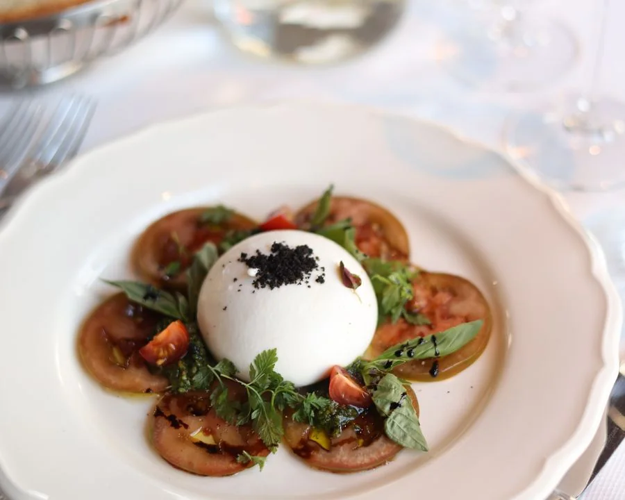
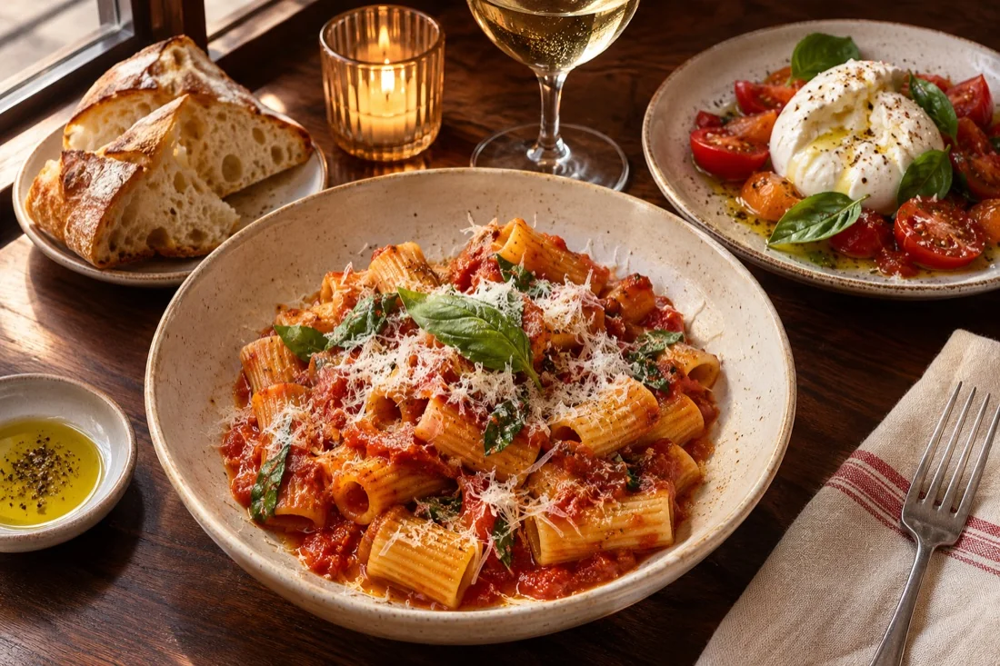
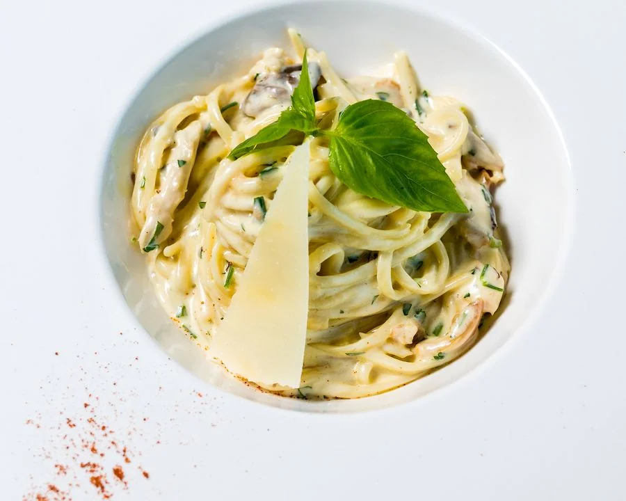

Queen West · Italian small plates · $$
Bar Rosso on Queen
Published
Come for a quick aperitivo and you may find yourself staying for dinner. Creamy burrata, bright seasonal tomatoes and generous sharing plates make this lively Queen West spot an easy choice for catching up with friends.

In this review
A lively first impression
Bar Rosso makes a good first impression with warm lighting, open shelves of wine, and easygoing bar seating. The room feels built for conversation, though the soundtrack is as much the surrounding tables as whatever is playing over the speakers. This is a place to join the evening’s energy.
The plan was a quick drink and a small bite. A look at the sharing plates changed that fairly quickly. The menu lends itself to ordering in stages, giving you time to decide whether the evening is staying short or becoming dinner.
Begin with burrata
The burrata is the standout starter, especially alongside tomatoes dressed simply with olive oil and basil. The contrast matters: cool, rich cheese against the sweetness and acidity of the tomatoes. Warm bread turns it from a single dish into something the whole table can keep returning to.
It is a straightforward combination, and that is its strength. There is enough flavour on the plate without extra flourishes, and the bread is worth saving until the tomatoes are gone. We would make this the first order rather than treating it as an optional extra.
Make room for pasta
A bowl of pasta gives the meal some substance without changing its relaxed character. Shared between two, it sits comfortably alongside a couple of starters; as a main, it makes a good reason to stay past the first glass. The cooking favours familiar combinations and careful seasoning over elaborate presentation.
The most satisfying way to order is gradually. Start with a few plates, see how hungry everyone is, and add another dish if the table wants one. Ordering everything at once risks crowding both the table and the experience.
A sociable stop that works best when you share a few plates and let the evening unfold.
The room and the hospitality
The team is happy to talk through the menu and suggest how much food to order. That guidance is useful in a sharing-plate restaurant, where a short list of dishes can still leave you wondering whether you have chosen enough. Service keeps things moving without making the table feel rushed.
Expect a sociable evening rather than a quiet one. Bar seating suits a casual visit particularly well; a larger catch-up will feel more comfortable when everyone is happy with a lively room. Small plates can add up, so choosing a few favourites offers better value than trying the whole menu.


Our take
We would return for an early evening glass and let the meal develop from there. Burrata, bread, and one pasta make a convincing starting point. Bar Rosso is at its best when you arrive without a rigid schedule and give good company as much attention as the food.
Our verdict
Worth pulling up a chair?
A sociable stop that works best when you share a few plates and let the evening unfold.